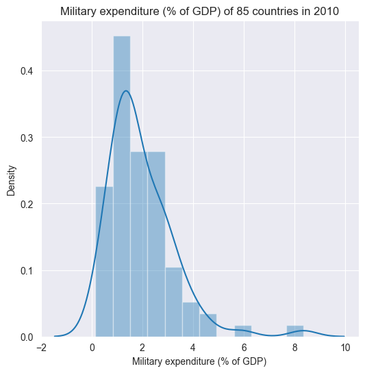
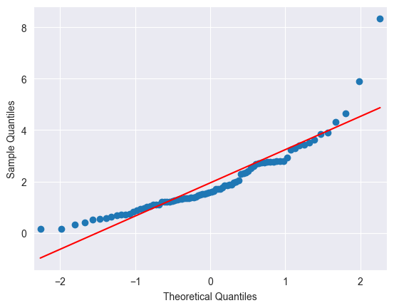
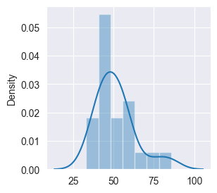
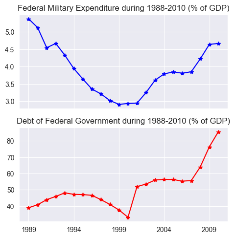
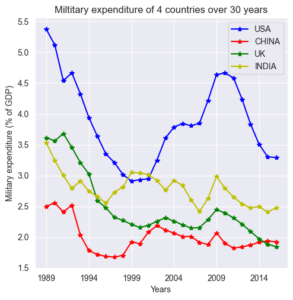

1.2 Datos Transversales#
Multiples entidades medidas en un único instante de tiempo
import warnings
warnings.filterwarnings("ignore")
import pandas as pd
import numpy as np
from matplotlib import pyplot as plt
import seaborn as sns
sns.set_style("darkgrid")
data = pd.read_csv('C:/Users/FBA/OneDrive - Acesco/0. Personales/2. Profesional/20240416 - Maestria en Analítica de Datos/20240919 Series de Tiempo/Semana 1/datasets/WDIData.csv')
print('Column names:', data.columns)
Column names: Index(['Country Name', 'Country Code', 'Indicator Name', 'Indicator Code',
'1960', '1961', '1962', '1963', '1964', '1965', '1966', '1967', '1968',
'1969', '1970', '1971', '1972', '1973', '1974', '1975', '1976', '1977',
'1978', '1979', '1980', '1981', '1982', '1983', '1984', '1985', '1986',
'1987', '1988', '1989', '1990', '1991', '1992', '1993', '1994', '1995',
'1996', '1997', '1998', '1999', '2000', '2001', '2002', '2003', '2004',
'2005', '2006', '2007', '2008', '2009', '2010', '2011', '2012', '2013',
'2014', '2015', '2016', 'Unnamed: 61'],
dtype='object')
print('No. of rows, columns:', data.shape)
No. of rows, columns: (401016, 62)
nb_countries = data['Country Code'].unique().shape[0]
print('Unique number of countries:', nb_countries)
Unique number of countries: 264
data.dtypes
Country Name object
Country Code object
Indicator Name object
Indicator Code object
1960 float64
...
2013 float64
2014 float64
2015 float64
2016 float64
Unnamed: 61 float64
Length: 62, dtype: object
central_govt_debt = data.loc[data['Indicator Name']=='Central government debt, total (% of GDP)']
military_exp = data.loc[data['Indicator Name']=='Military expenditure (% of GDP)']
print('Shape of central_govt_debt:', central_govt_debt.shape)
print('Shape of military_exp:', military_exp.shape)
Shape of central_govt_debt: (264, 62)
Shape of military_exp: (264, 62)
central_govt_debt['2010'].describe()
count 94.000000
mean 53.048479
std 29.790674
min 0.519665
25% 28.357797
50% 49.540245
75% 75.259012
max 161.596402
Name: 2010, dtype: float64
military_exp['2010'].describe()
count 192.000000
mean 1.988556
std 1.354856
min 0.000000
25% 1.190287
50% 1.613407
75% 2.624711
max 8.565679
Name: 2010, dtype: float64
#Definir Country Code, como indicador:
central_govt_debt.index = central_govt_debt['Country Code']
military_exp.index = military_exp['Country Code']
central_govt_debt_2010 = central_govt_debt['2010'].loc[~pd.isnull(central_govt_debt['2010'])]
military_exp_2010 = military_exp['2010'].loc[~pd.isnull(military_exp['2010'])]
central_govt_debt_2010
Country Code
CEB 47.446156
EMU 72.414709
ECS 63.137736
ECA 22.338687
TEC 27.287492
...
UGA 27.552595
UKR 29.969556
GBR 83.406797
USA 85.601594
URY 44.222702
Name: 2010, Length: 94, dtype: float64
military_exp_2010
Country Code
ARB 5.117807
CEB 1.482543
EAR 2.335511
EAS 1.563325
EAP 1.724963
...
VEN 0.853924
VNM 2.305049
YEM 4.685557
ZMB 1.382593
ZWE 0.977841
Name: 2010, Length: 192, dtype: float64
data_to_plot = pd.concat((central_govt_debt_2010, military_exp_2010), axis=1)
data_to_plot.columns = ['central_govt_debt', 'military_exp']
data_to_plot.head()
| central_govt_debt | military_exp | |
|---|---|---|
| Country Code | ||
| CEB | 47.446156 | 1.482543 |
| EMU | 72.414709 | 1.618759 |
| ECS | 63.137736 | 1.860343 |
| ECA | 22.338687 | 2.933044 |
| TEC | 27.287492 | 2.785617 |
data_to_plot.shape
(202, 2)
data_to_plot = data_to_plot.loc[(~pd.isnull(data_to_plot.central_govt_debt)) & (~pd.isnull(data_to_plot.military_exp)), :]
data_to_plot.head()
| central_govt_debt | military_exp | |
|---|---|---|
| Country Code | ||
| CEB | 47.446156 | 1.482543 |
| EMU | 72.414709 | 1.618759 |
| ECS | 63.137736 | 1.860343 |
| ECA | 22.338687 | 2.933044 |
| TEC | 27.287492 | 2.785617 |
data_to_plot.shape
(84, 2)
military_exp_np = np.array(data_to_plot.military_exp)
plt.figure(figsize=(6, 6))
g = sns.distplot(military_exp_np, norm_hist=False)
g.set_title('Military expenditure (% of GDP) of 85 countries in 2010');
plt.xlabel("Military expenditure (% of GDP)");

from statsmodels.graphics.gofplots import qqplot
qqplot(military_exp_np, line='s');

from scipy.stats import shapiro
print('Shapiro-Wilk Test:')
stat, p = shapiro(military_exp_np)
print('Statistics=%.6f, p=%e' % (stat, p))
alpha = 0.05
if p > alpha:
print('Sample looks Normal (fail to reject H0)')
else:
print('Sample does not look Normal (reject H0)')
Shapiro-Wilk Test:
Statistics=0.857023, p=1.646573e-07
Sample does not look Normal (reject H0)
import numpy as np
from scipy import stats
print('Kolmogorov-Smirnov:')
stat, p = stats.kstest(military_exp_np, stats.norm.cdf)
print('Statistics=%.6f, p=%e' % (stat, p))
alpha = 0.05
if p > alpha:
print('Sample looks Normal (fail to reject H0)')
else:
print('Sample does not look Normal (reject H0)')
Kolmogorov-Smirnov:
Statistics=0.659326, p=2.320049e-36
Sample does not look Normal (reject H0)
Series temporales#
Una entidad medida en multiples instantes de tiempo
central_govt_debt_us = central_govt_debt.loc[central_govt_debt['Country Code']=='USA', :].T
military_exp_us = military_exp.loc[military_exp['Country Code']=='USA', :].T
data_us = pd.concat((military_exp_us, central_govt_debt_us), axis=1)
index0 = np.where(data_us.index=='1960')[0][0]
index1 = np.where(data_us.index=='2010')[0][0]
data_us = data_us.iloc[index0:index1+1,:]
data_us.columns = ['Federal Military Expenditure', 'Debt of Federal Government']
data_us.head()
| Federal Military Expenditure | Debt of Federal Government | |
|---|---|---|
| 1960 | 8.35266 | NaN |
| 1961 | 8.487129 | NaN |
| 1962 | 8.656586 | NaN |
| 1963 | 8.189007 | NaN |
| 1964 | 7.467629 | NaN |
data_us['backward_fill'] = data_us['Debt of Federal Government'].bfill()
data_us.head()
| Federal Military Expenditure | Debt of Federal Government | backward_fill | |
|---|---|---|---|
| 1960 | 8.35266 | NaN | 39.016963 |
| 1961 | 8.487129 | NaN | 39.016963 |
| 1962 | 8.656586 | NaN | 39.016963 |
| 1963 | 8.189007 | NaN | 39.016963 |
| 1964 | 7.467629 | NaN | 39.016963 |
data_us['mean_fill'] = data_us['Debt of Federal Government'].mean()
data_us.head()
| Federal Military Expenditure | Debt of Federal Government | backward_fill | mean_fill | |
|---|---|---|---|---|
| 1960 | 8.35266 | NaN | 39.016963 | 51.155537 |
| 1961 | 8.487129 | NaN | 39.016963 | 51.155537 |
| 1962 | 8.656586 | NaN | 39.016963 | 51.155537 |
| 1963 | 8.189007 | NaN | 39.016963 | 51.155537 |
| 1964 | 7.467629 | NaN | 39.016963 | 51.155537 |
data_us['quadratic_fill'] = data_us['Debt of Federal Government'].interpolate(option='quadratic')
data_us.head()
| Federal Military Expenditure | Debt of Federal Government | backward_fill | mean_fill | quadratic_fill | |
|---|---|---|---|---|---|
| 1960 | 8.35266 | NaN | 39.016963 | 51.155537 | NaN |
| 1961 | 8.487129 | NaN | 39.016963 | 51.155537 | NaN |
| 1962 | 8.656586 | NaN | 39.016963 | 51.155537 | NaN |
| 1963 | 8.189007 | NaN | 39.016963 | 51.155537 | NaN |
| 1964 | 7.467629 | NaN | 39.016963 | 51.155537 | NaN |
quadratic = np.array(data_us.quadratic_fill)
plt.figure(figsize=(3, 3))
g = sns.distplot(quadratic, norm_hist=False)

data_us['nearest_fill'] = data_us['Debt of Federal Government'].interpolate(option='nearest')
data_us.head()
| Federal Military Expenditure | Debt of Federal Government | backward_fill | mean_fill | quadratic_fill | nearest_fill | |
|---|---|---|---|---|---|---|
| 1960 | 8.35266 | NaN | 39.016963 | 51.155537 | NaN | NaN |
| 1961 | 8.487129 | NaN | 39.016963 | 51.155537 | NaN | NaN |
| 1962 | 8.656586 | NaN | 39.016963 | 51.155537 | NaN | NaN |
| 1963 | 8.189007 | NaN | 39.016963 | 51.155537 | NaN | NaN |
| 1964 | 7.467629 | NaN | 39.016963 | 51.155537 | NaN | NaN |
nearest = np.array(data_us.nearest_fill)
plt.figure(figsize=(3, 3))
g = sns.distplot(nearest, norm_hist=False)
data_us['zero_fill'] = data_us['Debt of Federal Government'].interpolate(option='zero',limit_direction='both')
data_us.head()
| Federal Military Expenditure | Debt of Federal Government | backward_fill | mean_fill | quadratic_fill | nearest_fill | zero_fill | |
|---|---|---|---|---|---|---|---|
| 1960 | 8.35266 | NaN | 39.016963 | 51.155537 | NaN | NaN | NaN |
| 1961 | 8.487129 | NaN | 39.016963 | 51.155537 | NaN | NaN | NaN |
| 1962 | 8.656586 | NaN | 39.016963 | 51.155537 | NaN | NaN | NaN |
| 1963 | 8.189007 | NaN | 39.016963 | 51.155537 | NaN | NaN | NaN |
| 1964 | 7.467629 | NaN | 39.016963 | 51.155537 | NaN | NaN | NaN |
zero = np.array(data_us.zero_fill)
plt.figure(figsize=(3, 3))
g = sns.distplot(zero, norm_hist=False)
data_us['slinear_fill'] = data_us['Debt of Federal Government'].interpolate(option='slinear',limit_direction='both')
data_us.head()
slinear = np.array(data_us.slinear_fill)
plt.figure(figsize=(3, 3))
g = sns.distplot(slinear, norm_hist=False)
data_us['cubic_fill'] = data_us['Debt of Federal Government'].interpolate(option='cubic',limit_direction='both')
data_us.head()
cubic = np.array(data_us.cubic_fill)
plt.figure(figsize=(3, 3))
g = sns.distplot(cubic, norm_hist=False)
data_us['spline_fill'] = data_us['Debt of Federal Government'].interpolate(option='spline',limit_direction='both')
data_us.head()
spline = np.array(data_us.spline_fill)
plt.figure(figsize=(3, 3))
g = sns.distplot(spline, norm_hist=False)
data_us['barycentric_fill'] = data_us['Debt of Federal Government'].interpolate(option='barycentric',limit_direction='both')
data_us.head()
barycentric = np.array(data_us.barycentric_fill)
plt.figure(figsize=(3, 3))
g = sns.distplot(barycentric, norm_hist=False)
data_us['polynomial_fill'] = data_us['Debt of Federal Government'].interpolate(option='polynomial',limit_direction='both')
polynomial = np.array(data_us.polynomial_fill)
plt.figure(figsize=(3, 3))
g = sns.distplot(polynomial, norm_hist=False)
data_us.head(5)
| Federal Military Expenditure | Debt of Federal Government | backward_fill | mean_fill | quadratic_fill | nearest_fill | zero_fill | slinear_fill | cubic_fill | spline_fill | barycentric_fill | polynomial_fill | |
|---|---|---|---|---|---|---|---|---|---|---|---|---|
| 1960 | 8.35266 | NaN | 39.016963 | 51.155537 | NaN | NaN | NaN | NaN | NaN | NaN | NaN | NaN |
| 1961 | 8.487129 | NaN | 39.016963 | 51.155537 | NaN | NaN | NaN | NaN | NaN | NaN | NaN | NaN |
| 1962 | 8.656586 | NaN | 39.016963 | 51.155537 | NaN | NaN | NaN | NaN | NaN | NaN | NaN | NaN |
| 1963 | 8.189007 | NaN | 39.016963 | 51.155537 | NaN | NaN | NaN | NaN | NaN | NaN | NaN | NaN |
| 1964 | 7.467629 | NaN | 39.016963 | 51.155537 | NaN | NaN | NaN | NaN | NaN | NaN | NaN | NaN |
data_us.dropna(inplace=True)
print('Shape of data_us:', data_us.shape)
data_us.head(5)
Shape of data_us: (22, 12)
| Federal Military Expenditure | Debt of Federal Government | backward_fill | mean_fill | quadratic_fill | nearest_fill | zero_fill | slinear_fill | cubic_fill | spline_fill | barycentric_fill | polynomial_fill | |
|---|---|---|---|---|---|---|---|---|---|---|---|---|
| 1989 | 5.374717 | 39.016963 | 39.016963 | 51.155537 | 39.016963 | 39.016963 | 39.016963 | 39.016963 | 39.016963 | 39.016963 | 39.016963 | 39.016963 |
| 1990 | 5.120252 | 40.821367 | 40.821367 | 51.155537 | 40.821367 | 40.821367 | 40.821367 | 40.821367 | 40.821367 | 40.821367 | 40.821367 | 40.821367 |
| 1991 | 4.539845 | 43.948026 | 43.948026 | 51.155537 | 43.948026 | 43.948026 | 43.948026 | 43.948026 | 43.948026 | 43.948026 | 43.948026 | 43.948026 |
| 1992 | 4.666265 | 45.916542 | 45.916542 | 51.155537 | 45.916542 | 45.916542 | 45.916542 | 45.916542 | 45.916542 | 45.916542 | 45.916542 | 45.916542 |
| 1993 | 4.326925 | 48.104749 | 48.104749 | 51.155537 | 48.104749 | 48.104749 | 48.104749 | 48.104749 | 48.104749 | 48.104749 | 48.104749 | 48.104749 |
f, axarr = plt.subplots(2, sharex=True)
f.set_size_inches(5.5, 5.5)
axarr[0].set_title('Federal Military Expenditure during 1988-2010 (% of GDP)')
data_us['Federal Military Expenditure'].plot(linestyle='-', marker='*', color='b', ax=axarr[0])
axarr[1].set_title('Debt of Federal Government during 1988-2010 (% of GDP)')
data_us['Debt of Federal Government'].plot(linestyle='-', marker='*', color='r', ax=axarr[1]);

Datos de Panel#
Multiples entidades siendo medidas en multiples instantes en el tiempo. (midiendo la misma caracteristica)
chn = data.loc[(data['Indicator Name']=='Military expenditure (% of GDP)') & \
(data['Country Code']=='CHN'), :] #China
chn = data.loc[(data['Indicator Name']=='Military expenditure (% of GDP)') & \
(data['Country Code']=='CHN'), :].drop(data.columns[range(3)], axis=1)
chn = pd.Series(data=chn.values[0], index=chn.columns)
chn.dropna(inplace=True)
chn.head()
Indicator Code MS.MIL.XPND.GD.ZS
1989 2.499185
1990 2.555996
1991 2.407892
1992 2.518629
dtype: object
usa = data.loc[(data['Indicator Name']=='Military expenditure (% of GDP)') & \
(data['Country Code']=='USA'), :].drop(data.columns[range(3)], axis=1) #USA
usa = pd.Series(data=usa.values[0], index=usa.columns)
usa.dropna(inplace=True)
usa.head()
Indicator Code MS.MIL.XPND.GD.ZS
1960 8.35266
1961 8.487129
1962 8.656586
1963 8.189007
dtype: object
ind = data.loc[(data['Indicator Name']=='Military expenditure (% of GDP)') & \
(data['Country Code']=='IND'), :].drop(data.columns[range(3)], axis=1) #India
ind = pd.Series(data=ind.values[0], index=ind.columns)
ind.dropna(inplace=True)
ind.head()
Indicator Code MS.MIL.XPND.GD.ZS
1960 1.866015
1961 1.933365
1962 2.561202
1963 3.758057
dtype: object
gbr = data.loc[(data['Indicator Name']=='Military expenditure (% of GDP)') & \
(data['Country Code']=='GBR'), :].drop(data.columns[range(3)], axis=1) #United Kingdom
gbr = pd.Series(data=gbr.values[0], index=gbr.columns)
gbr.dropna(inplace=True)
gbr.head()
Indicator Code MS.MIL.XPND.GD.ZS
1960 6.343041
1961 6.190022
1962 6.210394
1963 6.082126
dtype: object
n_years = chn.shape[0]
print("#Years: ", n_years+1)
plt.figure(figsize=(5.5, 5.5))
usa[n_years+1:2*n_years].plot(linestyle='-', marker='*', color='b')
chn[1:n_years].plot(linestyle='-', marker='*', color='r')
gbr[n_years+1:2*n_years].plot(linestyle='-', marker='*', color='g')
ind[n_years+1:2*n_years].plot(linestyle='-', marker='*', color='y')
plt.legend(['USA','CHINA','UK','INDIA'], loc=1)
plt.title('Miltitary expenditure of 4 countries over 30 years')
plt.ylabel('Military expenditure (% of GDP)')
plt.xlabel('Years');
#Years: 30
